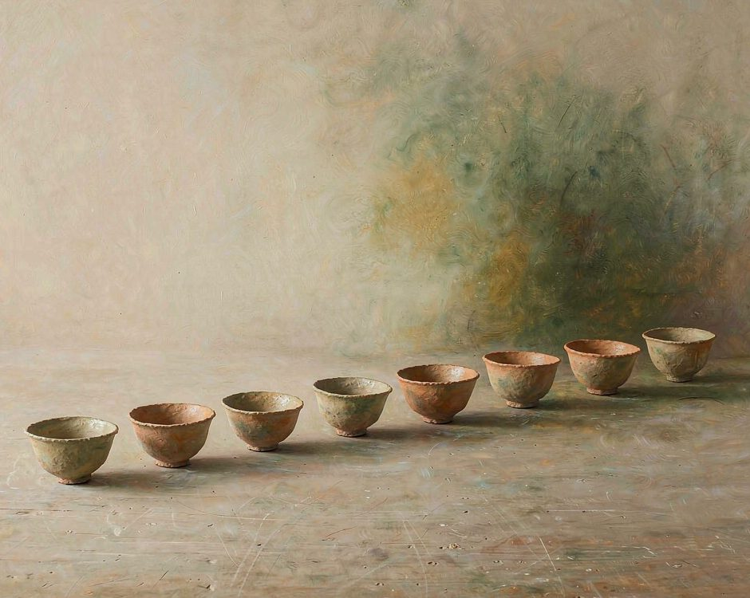
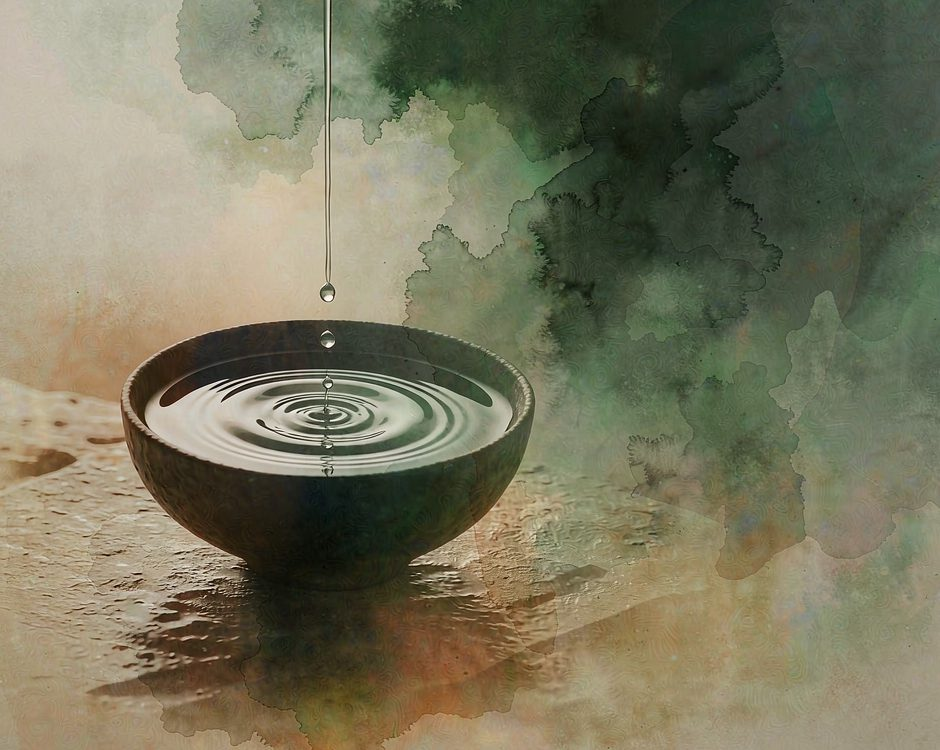

八篇寫完，才發現一件沒有預先設計的事。
每篇都在寫同一個動作，等。

第一篇等的是水。元陽的梯田要等水從山上山下走一趟，那個轉圈要轉好幾年才轉得通。第八篇等的是人。蒙自那碗米線要等六個人的手，少一雙都不成。
等的東西一直在變，而且越變越重。
等的對象在變重
把八篇排開來看，等的東西依次是水、葉、風與時間、器物、時間、樹與時間、米與石磨、人。
第一篇等的是水，那是整個系列裡最輕的東西。水不用人管，它自己會走，按自己的速度流。第二篇等的是葉子。版納的芭蕉葉要種在灶邊，一個多月才夠大，夠大才能包住一頓飯。
第三篇等的是風和時間。香格里拉那碗酥油茶裡有三個時間，哪一個都催不來。第四篇等的是器物。建水那口鍋不裝水，湯要從外面繞一圈才回來。
第五篇和第六篇等的是時間。宣威的火腿掛三年，普洱的茶樹是爺爺那一輩種下、孫子才輪到採。
第七篇等的是米和石磨。騰衝的米要在石磨下磨成粉，磨不細，就做不成一根絲。
第八篇等人。
從水到人。這條線走到這裡，等的東西已經不能自己完成了。前七篇裡有些東西自己會走，到第八篇，要等的是別人。

這個變化不是設計出來的。寫第一篇的時候只想到水，寫到第八篇的時候才發現，等的東西已經不是自然界的了。水會自己流，葉子自己長，風自己來，石磨在那裡不動。人不一樣，人要自己決定要不要來。
寫到這裡才發現，這是整個系列最難寫的一篇。前七篇可以寫土地，這一篇要寫人。寫土地的時候可以把責任放在自然那邊，寫人的時候不行。
時間放在哪裡
有一組對照是關於時間放在哪。
香格里拉的時間是藏起來的。昨天的奶，去年的青稞，很久以前壓的磚茶，三個時間疊在同一碗裡。喝下去才知道它們都在。
宣威的時間是掛起來的。火腿掛在牆上，看得見它在瘦、在失水、在變色。三年不是一個數字，是每天都能看見的一點變化。同一件事，一種藏起來，一種掛出來。藏起來的讓你喝到，掛出來的讓你看到。
普洱又把時間換了一個容器，封進茶餅。氧化一直在走，苦澀慢慢化掉，回甘慢慢出來。同一餅茶存十年和存二十年，不是同一個東西。
三種放法，一個共同點。
時間都不是被消耗掉的，是被存起來的。
這三篇放在一起看，會發現一件小事。存起來的時間都不趕時間。火腿掛著不急，茶封著不急，酥油茶端上桌也不急。每一種都把時間放在一個不用催的地方。
被催過的東西會變。火腿被催會急，葉子被催會紅，時間被催就催沒了。所以這三篇裡，能等的地方都留出來了。
一條工藝的閉環
建水、騰衝、蒙自，這三篇是一條線。
建水寫的是器物。土變成一口不上釉的鍋，鍋不裝水，湯從外面走一趟變成。騰衝寫的是絲。米在石磨下磨成粉，粉蒸成團，壓成一碗餌絲。
蒙自寫的是合。湯吊一整夜，米線用木機壓，配料一樣一樣分開燙，起鍋前澆上那碗湯。
器物、絲、碗。從土開始，到一隻碗結束。
這條線在寫的是手感。手感寫在手上，寫不出來。騰衝那篇裡有一句話，手感一斷，標準就斷了。蒙自那篇接下去，講的是到處都叫過橋米線，做得好的不多。
三篇的順序也值得看。建水先做鍋，因為沒有鍋什麼都做不了。騰衝再做絲，因為有了鍋得有東西盛。蒙自把這兩樣合起來，加上吊了一夜的湯，一碗才成。這是器物的順序，不是時間的順序。寫的時候是反過來的，先寫了蒙自，才發現前面要補建水和騰衝。
補完之後才看出來，原來三篇一直在說同一件事，只是說的地方不同。建水說的是土怎麼變成器物，騰衝說的是米怎麼變成線，蒙自說的是這些東西怎麼合成一碗。
這條線走完，才發現器物也有順序。
沒有順序，手藝就只是一堆技巧。
七篇都有一節誠實
八篇裡有七篇有一節，叫誠實的部分。
版納那節寫橡膠林取代雨林，年輕人走掉之後，撂下來的地長草，竹子長得比人快。建水那節寫機制壺和手工壺混在一起賣，好手藝被壓價。形狀可以仿，手仿不了。
香格里拉那節寫牧區的下一代在減少，能採的人越來越少，松茸不是年年都有。騰衝那節寫旅遊客變多，做的人沒跟著多，標準在模糊。吃的人嘗不出差別，只有做的人知道。
蒙自那節寫到處都叫過橋米線，做得好的不多。湯用兌的，肉片切厚，配料一鍋煮。
這些不是補充說明，是這條線的另一半。田園的那一面，必須跟著不田園的那一面一起寫。不然就成了廣告。這些誠實的那一節，加起來其實是同一句話。有一些東西正在消失，消失的速度比留下來的速度快。消失的東西大多是手藝，因為手藝要有人願意練，而願意練的人少。
這句話寫的時候不難，難的是承認它。承認了之後，整個系列的調性才定下來，不是田園，是田園加上正在消失。
寫的時候沒有刻意迴避這件事。這幾篇都寫了，寫的時候心裡並不舒服，但不寫就假了。
假了之後，讀者會記住那個地方的美好，然後去買一件帶回來。帶回來的東西和那個地方已經沒有關係了。這是這條線最不願意看到的結果。
等的東西越來越重
八篇寫完，最先浮出來的，不是某一個地點，是等這個動作。
等水、葉、風、器物、米、人。
等的東西越重，越慢，也越難。有些東西自己會走，有些東西得有人做。走到第八篇才知道，這兩種差別很大。
水會自己流。人不會自己來。
這句話是八篇加起來的收束。第一篇的梯田只要有水就會轉，第八篇的米線要有人守一夜的火。土地可以自己完成一部分，完成不了的那部分要人接上。
分清楚哪一部分是土地能做的，哪一部分必須人來做，這是寫完八篇才學會的事。
下一個地方，會有新的東西要等。
八篇寫下來，明白了這條線要往哪走。土地自己會做的部分，交給土地。要人接上的部分，交給人。分清楚這兩件事，寫下去才知道要站在哪裡說話。
下一篇文章會是川貴粵其中一地。線索已經在了，等的東西也會換。
（小練習。找一件正在等的事，算算它要等多久，再想想它是會自己走，還是要別人做。）
你現在最在等的是什麼。